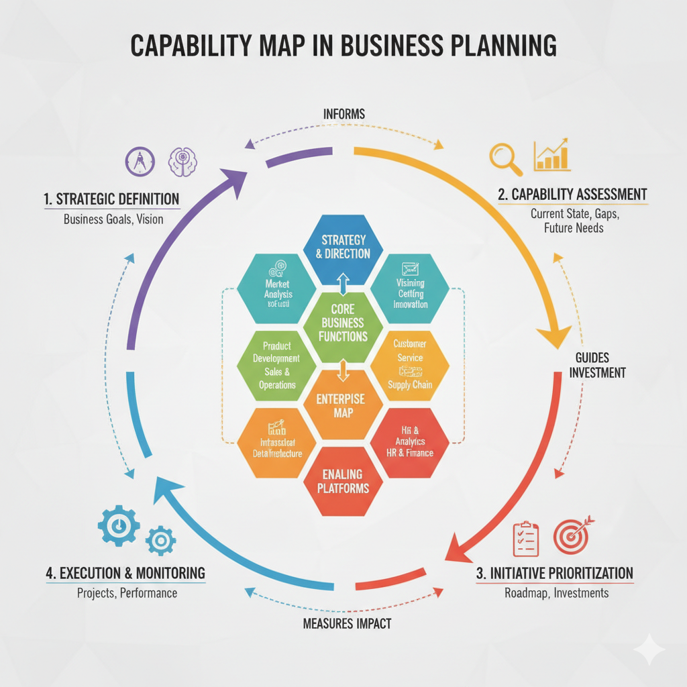

Hva er Nasjonal arkitektur?
I en norsk kontekst er nasjonal arkitektur et overordnet rammeverk for hvordan offentlig sektor - i samspill med privat sektor - bygger og setter sammen digitale løsninger. Rammeverket forvaltes av Digitaliseringsdirektoratet (Digdir).
Hovedmålet med nasjonal arkitektur er å etablere et felles digitalt økosystem. Dette fungerer som felles "kjøreregler" og "byggeklosser", og legger til rette for:
- Sammenhengende tjenester: Innbyggere og næringsliv skal oppleve offentlige tjenester som sømløse og brukervennlige, på tvers av kommuner, direktorater og etater. Brukerens behov settes i sentrum, ikke hvordan forvaltningen er organisert.
- Deling av data ("Kun én gang"): Systemer skal utveksle informasjon på en sikker måte slik at brukerne slipper å oppgi samme opplysninger til det offentlige mer enn én gang.
- Gjenbruk av fellesløsninger: Virksomheter skal gjenbruke nasjonale felleskomponenter (som ID-porten, Altinn og Maskinporten) fremfor å utvikle egne, overlappende løsninger. Dette sparer samfunnet for store summer.
- Samhandling (Interoperabilitet): For at systemer skal kunne "snakke sammen", definerer nasjonal arkitektur standarder, referansearkitekturer og prinsipper for teknisk, semantisk, organisatorisk og juridisk samhandling.
- Tillit og sikkerhet: Informasjonssikkerhet og innebygd personvern er fundamentale byggeklosser for å sikre befolkningens tillit til offentlige digitale tjenester.
Kort fortalt sikrer nasjonal arkitektur at vi bygger et moderne, bærekraftig og effektivt digitalt Norge som trekker i samme retning.
Hva er felles økosystem?
Felles økosystem for nasjonal digital samhandling og tjenesteutvikling er en samling verktøy og løsninger som kan brukes på tvers for å utvikle digitale tjenester. Hovedmålet med økosystemet er at offentlige tjenester skal oppleves som sammenhengende og helhetlige for både innbyggere og næringsliv, uavhengig av hvilken etat eller kommune som faktisk tilbyr dem.
Digdir har også utarbeidet en konkret modell for felles økosystem. Denne modellen illustrerer hvordan vi kan ivareta samhandling på juridisk, organisatorisk, semantisk og teknisk nivå. Konseptet hjelper forvaltningen med å bryte opp komplekse tjenester i håndterbare bolker og viser avhengighetene mellom ulike aktører og systemer.

Konseptuell skisse
Diagrammet under illustrerer forholdet mellom aktørene, kapabilitetene i Nasjonal arkitektur, og hvordan dette understøtter strategiske mål for økt samhandlingsevne i et felles økosystem.
flowchart TD
%% Sektorer og aktører
Sektorer["Ulike sektorer
(Stat, Kommune, Helse, Næringsliv)"]
%% Nasjonal arkitektur rammeverk
subgraph NA [Nasjonal arkitektur]
subgraph Konkrete_felleslosninger [Eksempler på fellesløsninger]
subgraph Digdir_losninger [Digdir]
IDporten["ID-porten"]
Maskinporten
eSignering
FDK["Felles datakatalog"]
Altinn["Altinn (Tjenesteutvikling og portal)"]
DPV["Digital postkasse"]
eFormidling
eInnsyn
KRR["Kontakt- og reservasjonsregisteret"]
NorgeNo["Norge.no"]
end
subgraph KS_losninger [KS Digital]
SvarUt["Fiks SvarUt"]
MinKommune["KS Min kommune"]
FiksRegister["Fiks register"]
Digisos["Fiks digisos"]
end
end
Ressurser["Ressurser
(Fellesløsninger, data, standarder)"]
Kapabiliteter["Kapabiliteter
(Evnen til å samhandle og dele)"]
Konkrete_felleslosninger -->|Utgjør| Ressurser
Ressurser -.->|Realiserer| Kapabiliteter
end
%% Målbilde
subgraph Økosystem [Felles digitalt økosystem]
Strategi["Strategiske mål"]
Samhandling["Økt samhandlingsevne"]
Strategi -.->|Fører til| Samhandling
end
%% Relasjoner
Sektorer <-->|Benytter og bidrar til| Kapabiliteter
Kapabiliteter ===>|Understøtter| Strategi
Arkitekturstyring i samhandlingstjenester
Dette dokumentet beskriver anbefalte prinsipper og fremgangsmåter for arkitekturstyring i utviklingen av digitale samhandlingstjenester i offentlig sektor. Målet er å sikre at løsninger utvikles på en enhetlig, sikker og gjenbrukbar måte, i tråd med Nasjonal arkitektur.
Prinsipper for arkitekturstyring
Her kan du liste opp overordnede prinsipper som skal ligge til grunn for arkitekturarbeidet.
- Prinsipp 1: Beskrivelse...
- Prinsipp 2: Beskrivelse...
- Prinsipp 3: Beskrivelse...
Roller og ansvar
En oversikt over sentrale roller og deres ansvar i arkitekturprosessen.
- Tjenesteeier: Beskrivelse...
- Løsningsarkitekt: Beskrivelse...
- Sikkerhetsarkitekt: Beskrivelse...
Prosess og livssyklus
Beskrivelse av hvordan arkitekturstyring integreres i de ulike fasene av en tjenestes livssyklus, fra konsept til avhending.
Konseptfase
...
Utviklingsfase
...
Forvaltningsfase
...
Informasjonsforvaltning
Hva er informasjonsforvaltning?
Ifølge Digitaliseringsdirektoratet (Digdir) er informasjonsforvaltning definert som:
"Aktiviteter, verktøy og andre tiltak for å sikre best mulig kvalitet, utnytting og sikring av informasjon i en virksomhet. Organisering av informasjonen skal være systematisk og henge sammen med virksomheten sine arbeidsprosesser."
God informasjonsforvaltning er en forutsetning for å realisere "kun én gang"-prinsippet og skape sammenhengende tjenester. Det handler om å gå fra at data er innelåst i siloer, til at informasjon behandles som en felles ressurs som kan deles og gjenbrukes på tvers av forvaltningen.
Digdirs prinsipper for informasjonsmodeller
For å sikre at offentlige virksomheter bygger informasjonsmodeller som fungerer i et felles økosystem, har Digdir definert ni grunnleggende designprinsipper:
- Sammenheng: Modellene skal være sammenhengende på tvers av ulike faser i modelleringsprosessen og på tvers av abstraksjonsnivåer.
- Brukerperspektiv: Modellene skal være så enkle som mulig for å dekke behovet, og lette å forstå for de aktuelle målgruppene.
- Terminologi: Modellene skal i størst mulig grad baseres på eksisterende termer og definisjoner (f.eks. fra Felles datakatalog).
- Dokumentasjon: Modellene skal ha god dokumentasjon tilpasset målgruppene.
- Tilgjengelighet: Modellene skal gjøres tilgjengelige på standardiserte formater.
- Gjenbruk og utveksling av data: Informasjonsmodellene skal understøtte deling, gjenbruk og utveksling av data i og mellom virksomheter.
- Modularitet: Modellene skal deles opp i gjenbrukbare moduler.
- Stabilitet og utvidbarhet: Modellene skal være stabile over tid, men kunne utvides ved behov gjennom et definert forvaltningsregime.
- Verktøyuavhengighet: Modellene skal utformes uavhengig av spesifikke IT-verktøy.
Gjennom å følge disse prinsippene legger vi til rette for økt samhandlingsevne, bedre datakvalitet og mer effektive offentlige tjenester.
Nasjonal Arkitektur: Kapabilitetsmapping utkast
Enkel oversikt med eksempler
Mapping mellom nasjonale kapabiliteter og fellesressurser
| Kapabilitet & Definisjon | Produkter & Ressurser |
|---|---|
| Strategisk styring – Å sette retning for nasjonal arkitektur og realisere strategiske mål. | Digitaliseringsrådet, SKATE, Medfinansieringsordningen, Stimulab, Digitaliseringsrundskrivet |
| Juridisk samhandling – Å forvalte et helhetlig juridisk rammeverk for sikker digital samhandling. | Ressurssenter for deling av data, Veileder for digitaliseringsvennlig regelverk, Oversikt over EU-regelverk |
| Informasjonsforvaltning – Felles rammeverk så virksomheter kan utveksle data og beskrivelser. | data.norge.no (fellesløsning), Rammeverk for informasjonsforvaltning, Orden i eget hus, Nasjonal verktøykasse for deling |
| Informasjonssikkerhet – Tilstrekkelig sikkerhet i tjenester i felles økosystem. | sikkert.no, Maskinporten (fellesløsning), NSM Grunnprinsipper, Stifinneren (internkontroll) |
| Tillit – Autentisering og autorisasjon på tvers av tjenestekjeder. | ID-porten (fellesløsning), Maskinporten (fellesløsning), eSignering (fellesløsning), Altinn autorisasjon (fellesløsning) |
| Datautveksling – Sikker og standardisert utveksling av data mellom aktører. | eFormidling (fellesløsning), FIKS-plattformen (fellesløsning), Altinn formidling (fellesløsning), Altinn events (fellesløsning) |
| Tjenesteutvikling – Å utvikle sammenhengende digitale tjenester. | Altinn Studio / 3.0 (fellesløsning), Den triple diamanten, Tjenestedesign-metodikk, Strategisk fremsyn |
| Sluttbrukertjenester – Sammenhengende brukeropplevelse gjennom standardiserte tjenester. | Norge.no (fellesløsning), Altinn.no (fellesløsning), eInnsyn (fellesløsning), Minkommune (fellesløsning) |
| Samarbeid – Samhandling på tvers av offentlig og privat forvaltning. | SKATE-samarbeidet, Fagarenaer og nettverk, Internasjonalt samarbeid |
| Veiledning – At veiledninger utarbeides og benyttes i felles økosystem. | Veiledning for sammenh. tjenester, Beste praksis hendelsesarkitektur, Nasjonal verktøykasse for deling |
| Datakilder – Tilgjengeliggjøre data som nasjonal fellesressurs. | Folkeregisteret (fellesløsning), Enhetsregisteret (fellesløsning), Matrikkelen (fellesløsning), FIKS Register (fellesløsning) |
| Datadrevet – Systematisk bruk av data for innsikt og bedre tjenester. | data.altinn.no (fellesløsning), Analyse av livshendelser, Strategisk fremsyn basert på data |
| Standardisering – Identifisere og fremme standarder for interoperabilitet. | Referansekatalogen for IT-standarder, Arkitektur- og standardiseringsrådet, Rammeverk for digital samhandling |
[ADR-0000] Tittel på arkitekturbeslutningen
Dato: YYYY-MM-DD
Status: [Foreslått | Akseptert | Avvist | Forkastet]
Kontekst
Beskriv problemet vi prøver å løse, og den relevante bakgrunnen for hvorfor vi må ta en beslutning. Hva er begrensningene, kravene eller forutsetningene? Hold det objektivt og faktabasert.
Beslutning
Hva er selve beslutningen vi har tatt (eller foreslår å ta)? Skriv det klart og tydelig. Gjerne inkluder hvilke andre alternativer som ble vurdert og hvorfor de ble valgt bort.
Konsekvenser
Hvilke konsekvenser får denne beslutningen for systemet, teamet eller prosjektet?
Dette kan inkludere:
- Positive: Hva blir bedre, enklere eller raskere? (F.eks. støtter "kun én gang"-prinsippet, gjenbruk av nasjonal felleskomponent).
- Negative: Hva blir vanskeligere, dyrere eller hvilken teknisk gjeld introduserer vi? (F.eks. innfører en ny avhengighet, krever spesiell kompetanse).